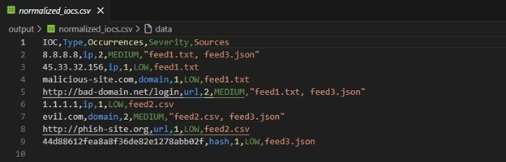
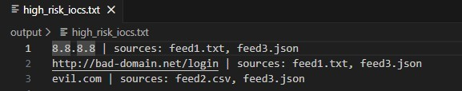
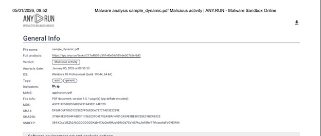
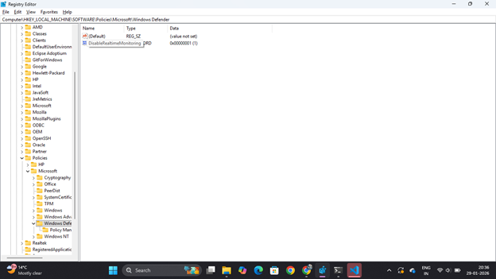
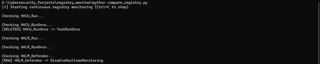
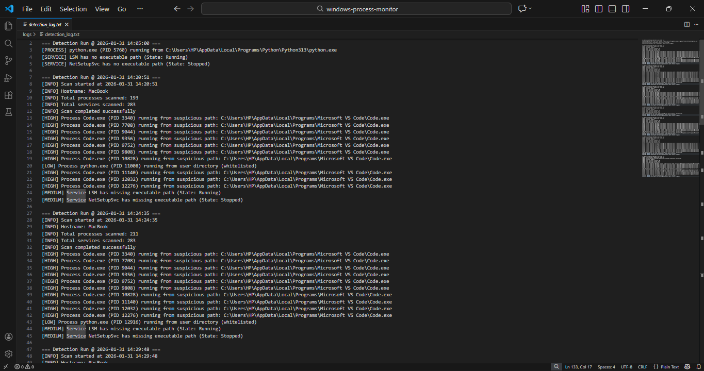

Penetration Testing · Threat Intelligence · SOC Fundamentals
I break things carefully and write down exactly how. Two cybersecurity internships: one running an authorized penetration test on live production infrastructure, one building Python detection and threat-intel tooling. Google Cybersecurity Professional Certificate and CCNA certified.
Security work from my internships and personal builds. Open any card for the problem, the approach, the tools, and what actually came out of it.
A 12-task engagement against live production infrastructure, run end to end: reconnaissance and OSINT, scanning, exploitation testing, then automation. Every phase reported and defended in a live viva.
Threat feeds arrive as TXT, CSV and JSON and nothing lines up. This tool parses all three, normalizes indicators, correlates them across sources, and scores severity by how many feeds agree.
Malicious PDFs hide JavaScript and auto-execution triggers that fire the moment the file opens. Pulled them apart statically with PDFID and pdf-parser, then detonated a sample in a sandbox to watch the real behaviour.
Malware loves Run and RunOnce keys because they survive a reboot. This monitor keeps a baseline of trusted registry values and flags anything new, modified or deleted against it.
Attackers hide inside processes that look legitimate. This agent walks parent-child relationships, catches execution from user-writable directories, and sorts alerts by severity the way a SOC queue would.
A web-based phishing detector that classifies malicious URLs using machine learning, built as a final-year capstone with a team.
Where the hands-on work actually happened.
UptoSkills · Remote
Unified Mentor · Remote
Galgotias University, Greater Noida · CGPA 8.2
Network Security · Cryptography · Computer Networks · Operating Systems · Python · Data Structures
Labelled honestly. Hands-on means I've used it on a real target or built with it; foundational means coursework and labs, not production time.
Reconnaissance, scanning, enumeration and exploitation testing against real infrastructure. Comfortable picking the right tool for a phase and documenting what it found, including when the honest answer is "nothing exploitable here."
Mapping external attack surface and subdomains using Shodan, Censys, Google Dorking, Wappalyzer, Masscan, TheHarvester and the Wayback Machine.
IOC normalization and cross-feed correlation, plus static and dynamic analysis of suspicious files using PDFID, pdf-parser and sandbox detonation.
Python agents for Windows registry persistence detection and process/service anomaly monitoring, with baseline comparison and severity-ranked alerting.
Log analysis, event correlation, incident response playbooks and SIEM concepts through the Google Cybersecurity Professional Certificate lab environment. No production SIEM platform time yet.
TCP/IP, DNS, routing and switching, firewall and IDS/IPS fundamentals. Daily driver experience with Kali Linux in VirtualBox, plus Windows security monitoring.
Plus SQL injection labs on PortSwigger Web Security Academy and foundational labs on TryHackMe.
Hiring for a role where curiosity is the job?
I'm looking for entry-level cybersecurity and SOC trainee roles where I can put this foundation to work on threat detection and incident response. Send a real note and you'll get a real reply.
UptoSkills needed an authorized security assessment of its live production infrastructure, spanning the main web application and several connected subdomains, to find real exposure before someone else did.
Worked through four phases across 12 tasks, one tool per task, each with its own structured report and a live viva defence:
Identified and responsibly reported real security issues, including publicly reachable monitoring dashboards and information disclosure through HTTP response headers. Each finding was documented with reproduction steps and severity, then presented to and questioned by a supervisor.
Running a tool is the easy part. The harder skills were reading output critically enough to reject my own false positives, and being able to defend a finding out loud when someone pushes back on it.
Threat intelligence feeds are spread across TXT, CSV and JSON with inconsistent formatting, which makes manual correlation slow and error-prone for an analyst.
Built a Python aggregation tool that parses multiple feed formats, normalizes indicators (IP, domain, URL, hash) into one schema, correlates them across sources, and assigns severity based on how many independent feeds report the same indicator.
Python · Regex · CSV/JSON parsing · Command line · VS Code
Produced clean normalized IOC datasets and surfaced high-risk indicators appearing across multiple feeds, which is a far stronger signal than any single source on its own.

Normalized IOC dataset generated from multiple threat feeds.

High-risk IOC detection highlighting malicious domains and IP addresses.
View on GitHubMalicious PDFs embed JavaScript and automatic execution triggers that fire a hidden payload the moment the document is opened.
Static analysis with PDFID and pdf-parser to locate suspicious objects and triggers, followed by dynamic sandbox detonation to observe runtime behaviour, process activity and network calls.
PDFID · pdf-parser.py · ANY.RUN sandbox · Python · Windows
Confirmed embedded JavaScript, OpenAction triggers, abnormal process execution, and sandbox-verified malicious behaviour in the analyzed sample.

Dynamic analysis of the malicious PDF sample inside the ANY.RUN sandbox.
View on GitHubMalware frequently modifies Run and RunOnce registry keys to persist and re-execute on every startup, and those changes are easy to miss by eye.
Built a Python monitor that captures a baseline of trusted registry values and continuously compares the live state against it, flagging new, modified or deleted entries.
Python · winreg module · Windows · VS Code
Detected startup persistence attempts and Windows Defender policy modifications through baseline comparison and real-time monitoring.

Registry value being monitored for suspicious persistence changes.

Command-line registry monitoring detecting an unauthorized modification.
View on GitHubAttackers abuse legitimate Windows processes and services to run malicious code and persist without standing out in a process list.
Built a monitoring agent that enumerates processes and services, analyzes parent-child relationships, detects execution from user-writable directories, and classifies alerts by severity.
Python · psutil · PowerShell (WMI) · Windows · VS Code
Flagged suspicious processes running from user directories and produced timestamped, severity-ranked logs in the shape a SOC analyst would actually triage.

Detection logs identifying suspicious processes running from user directories.
View on GitHubPhishing URLs are cheap to generate and change constantly, so static blocklists fall behind almost immediately.
Built a web-based detection system as a final-year capstone with a team, using machine learning to classify URLs as malicious or legitimate from their structural features.
Python · Machine learning libraries · Web front end
A working detector that takes a URL and returns a phishing verdict, built and demonstrated as the group capstone deliverable.